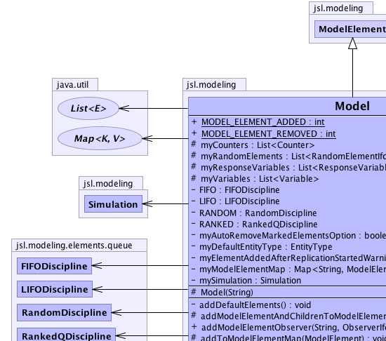
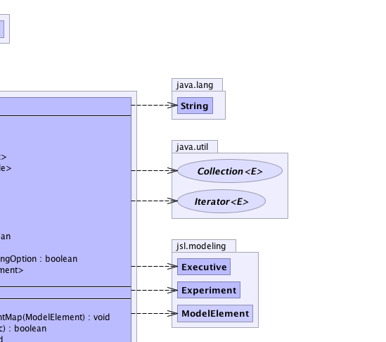
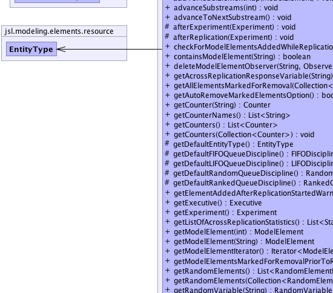
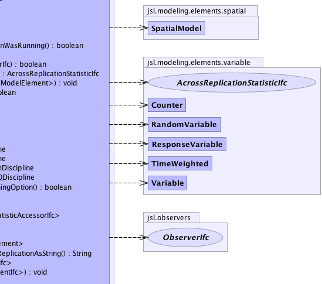
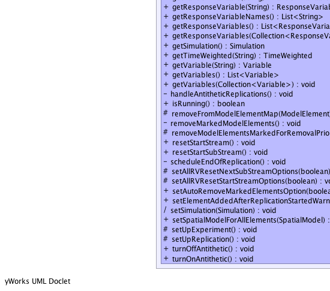
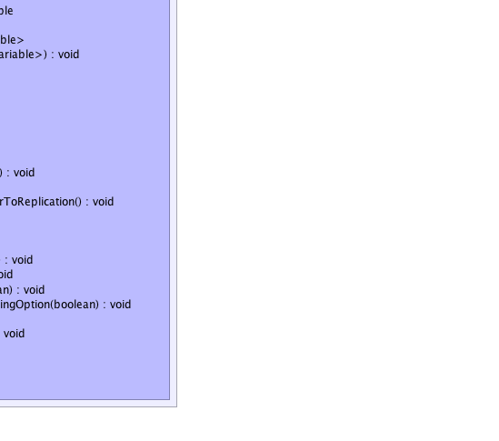

jsl.modeling.ModelElement
jsl.modeling.Model
jsl.modeling.ModelElement
jsl.modeling.Model
|
||||||||||
| PREV CLASS NEXT CLASS | FRAMES NO FRAMES | |||||||||
| SUMMARY: NESTED | FIELD | CONSTR | METHOD | DETAIL: FIELD | CONSTR | METHOD | |||||||||
java.lang.Object
public class Model
This class serves as the base (container) model element for all model elements in the simulation.
|  |  |
|  |  |
|  |  |
| Nested Class Summary |
|---|
| Nested classes/interfaces inherited from class jsl.modeling.ModelElement |
|---|
ModelElement.TimedUpdateEventAction, ModelElement.WarmUpEventAction |
| Field Summary | |
|---|---|
private FIFODiscipline |
FIFO
A QueueDiscipline to allow first in, first out behavior. |
private LIFODiscipline |
LIFO
A QueueDiscipline for last in, first out behavior. |
static int |
MODEL_ELEMENT_ADDED
An "enum" to indicate that the model element was added to the model element hierarchy |
static int |
MODEL_ELEMENT_REMOVED
An "enum" to indicate that the model element was removed from the model element hierarchy |
private boolean |
myAutoRemoveMarkedElementsOption
Indicates whether or not the model should automatically remove any elements that have been marked for removal prior to each replication. |
protected java.util.List<Counter> |
myCounters
A list of all the Counters within the model |
private EntityType |
myDefaultEntityType
A reference to the default entity type |
private boolean |
myElementAddedAfterReplicationStartedWarningOption
If a model element is added to the model after a replication has started this is likely to be a conceptual error. |
private java.util.Map<java.lang.String,ModelElement> |
myModelElementMap
A Map that holds all the model elements in the order in which they are created |
protected java.util.List<RandomElementIfc> |
myRandomElements
A list of all random elements within the model |
protected java.util.List<ResponseVariable> |
myResponseVariables
A list of all the response variables (including TimeWeighted) within the model |
private Simulation |
mySimulation
The simulation that is running the model |
protected java.util.List<Variable> |
myVariables
A list of all the Variables within the model |
private RandomDiscipline |
RANDOM
A QueueDiscipline for random selection from the queue. |
private RankedQDiscipline |
RANKED
A QueueDiscipline for ranked ordering of the queue. |
| Constructor Summary | |
|---|---|
protected |
Model(java.lang.String name)
Constructs a model called "name" |
| Method Summary | |
|---|---|
private void |
addDefaultElements()
|
protected void |
addModelElementAndChildrenToModelElementMap(ModelElement element)
Used by ModelElement to assist with changing the model element's parent. |
boolean |
addModelElementObserver(java.lang.String name,
ObserverIfc observer)
Adds the supplied observer to the ModelElement with the given name. |
protected void |
addToModelElementMap(ModelElement modelElement)
Adds the model element to the Model's model element map This method is called from the model element's constructor |
void |
advanceSubstreams(int n)
Advances the streams of all RandomElementIfc n times. |
void |
advanceToNextSubstream()
Causes RandomElementIfc that have been added to the model to immediately advance their random number streams to the next substream in their stream. |
protected void |
afterExperiment(Experiment e)
|
protected void |
afterReplication(Experiment e)
|
boolean |
checkForModelElementsAddedWhileReplicationWasRunning()
Checks if there exists at least one model element that was added during the replication. |
boolean |
containsModelElement(java.lang.String modelElementName)
Checks to see if the model element has been registered with the Model using it's uniquely assigned name. |
boolean |
deleteModelElementObserver(java.lang.String name,
ObserverIfc observer)
Removes the supplied observer from the ModelElement with the given name. |
AcrossReplicationStatisticIfc |
getAcrossReplicationResponseVariable(java.lang.String name)
Gets the AcrossReplicationStatisticIfc for the provided name. |
void |
getAllElementsMarkedForRemoval(java.util.Collection<ModelElement> c)
Places all model elements in the model that are marked for removal into the supplied collection |
boolean |
getAutoRemoveMarkedElementsOption()
Indicates whether or not the model will automatically remove elements that are marked for removal prior to each replication. |
Counter |
getCounter(java.lang.String name)
Returns the Counter associated with the name or null if named element is not in the model. |
java.util.List<java.lang.String> |
getCounterNames()
Returns a list of strings with each element being the unique model element name for the Counters within the model |
java.util.List<Counter> |
getCounters()
Returns an unmodifiable collection holding all the Counters within the Model. |
void |
getCounters(java.util.Collection<Counter> c)
Fills up the provided collection with all of the Counters that are contained by any model elements within the model. |
protected EntityType |
getDefaultEntityType()
Returns a reference to the default entity type |
protected FIFODiscipline |
getDefaultFIFOQueueDiscipline()
Returns a reference to the default FIFOQueueDiscipline |
protected LIFODiscipline |
getDefaultLIFOQueueDiscipline()
Returns a reference to the default LIFOQueueDiscipline |
protected RandomDiscipline |
getDefaultRandomQueueDiscipline()
Returns a reference to the default RandomQueueDiscipline |
protected RankedQDiscipline |
getDefaultRankedQueueDiscipline()
Returns a reference to the default RankedQueueDiscipline |
boolean |
getElementAddedAfterReplicationStartedWarningOption()
If a model element is added to the model after a replication has started this is likely to be a conceptual error. |
Executive |
getExecutive()
Returns a reference to the Executive or null. |
Experiment |
getExperiment()
Returns a reference to the Experiment or null. |
java.util.List<StatisticAccessorIfc> |
getListOfAcrossReplicationStatistics()
The responses as a list of StatisticAccessorIfc |
ModelElement |
getModelElement(int id)
Returns the model element that has the provided unique id or null if not found |
ModelElement |
getModelElement(java.lang.String name)
Returns the model element associated with the name. |
java.util.Iterator<ModelElement> |
getModelElementIterator()
Returns an Iterator to all the ModelElements registered inside this model |
java.lang.String |
getModelElementsMarkedForRemovalPriorToReplicationAsString()
Returns as a String the names of the model elements returned by getAllElementsNeedingRemoval() |
java.util.List<RandomElementIfc> |
getRandomElements()
Returns an unmodifiable collection holding all the RandomElementIfc within the Model. |
void |
getRandomElements(java.util.Collection<RandomElementIfc> c)
Gets all instances of the RandomElementIfc interface within the model hierarchy. |
RandomVariable |
getRandomVariable(java.lang.String name)
Returns the random variable associated with the name or null if named element is not in the model. |
ResponseVariable |
getResponseVariable(java.lang.String name)
Returns the response variable associated with the name or null if named element is not in the model. |
java.util.List<java.lang.String> |
getResponseVariableNames()
Returns a list of strings with each element being the unique model element name for the ResponseVariables within the model |
java.util.List<ResponseVariable> |
getResponseVariables()
Returns an unmodifiable collection holding all the ResponseVariables within the Model. |
void |
getResponseVariables(java.util.Collection<ResponseVariable> c)
Fills up the provided collection with all of the response variables that are contained by any model elements within the model. |
Simulation |
getSimulation()
Returns a reference to the Simulation or null. |
TimeWeighted |
getTimeWeighted(java.lang.String name)
Returns the time weighted variable associated with the name or null if named element is not in the model. |
Variable |
getVariable(java.lang.String name)
Returns the variable associated with the name or null if named element is not in the model. |
java.util.List<Variable> |
getVariables()
Returns an unmodifiable collection holding all the Variables within the Model. |
void |
getVariables(java.util.Collection<Variable> c)
Gets all instances of the Variable class within the model hierarchy. |
private void |
handleAntitheticReplications()
|
boolean |
isRunning()
Returns true if the executive is running, false if it is not running or if the model is not yet part of a simulation. |
protected void |
removeFromModelElementMap(ModelElement modelElement)
Removes the given model element from the Model's model element map. |
private void |
removeMarkedModelElements()
|
protected void |
removeModelElementsMarkedForRemovalPriorToReplication()
Used to remove any flagged model elements from the model prior to a replication |
void |
resetStartStream()
Causes RandomElementIfc that have been added to the model to immediately reset their random number streams to the beginning of their starting stream. |
void |
resetStartSubStream()
Causes RandomElementIfc that have been added to the model to immediately reset their random number streams to the beginning of their current sub stream. |
private void |
scheduleEndOfReplication()
|
protected void |
setAllRVResetNextSubStreamOptions(boolean option)
Sets the reset next sub stream option for all RandomElementIfc in the model to the supplied value, true is the default behavior. |
protected void |
setAllRVResetStartStreamOptions(boolean option)
Sets the reset start stream option for all RandomElementIfc in the model to the supplied value, true is the default behavior. |
void |
setAutoRemoveMarkedElementsOption(boolean flag)
Sets the option for the model to automatically remove elements that are marked for removal prior to each replication. |
void |
setElementAddedAfterReplicationStartedWarningOption(boolean flag)
If a model element is added to the model after a replication has started this is likely to be a conceptual error. |
(package private) void |
setSimulation(Simulation sim)
|
void |
setSpatialModelForAllElements(SpatialModel model)
This method can be used to ensure that all model elements within the model use the same spatial model |
protected void |
setUpExperiment()
|
protected void |
setUpReplication()
|
void |
turnOffAntithetic()
Causes RandomElementIfc that have been added to the model to immediately turn off their antithetic generating streams. |
void |
turnOnAntithetic()
Causes RandomElementIfc that have been added to the model to immediately turn on their antithetic generating streams. |
| Methods inherited from class java.lang.Object |
|---|
clone, equals, finalize, getClass, hashCode, notify, notifyAll, wait, wait, wait |
| Field Detail |
|---|
public static final int MODEL_ELEMENT_ADDED
public static final int MODEL_ELEMENT_REMOVED
protected java.util.List<ResponseVariable> myResponseVariables
protected java.util.List<Counter> myCounters
protected java.util.List<Variable> myVariables
protected java.util.List<RandomElementIfc> myRandomElements
private java.util.Map<java.lang.String,ModelElement> myModelElementMap
private boolean myAutoRemoveMarkedElementsOption
private boolean myElementAddedAfterReplicationStartedWarningOption
private Simulation mySimulation
private EntityType myDefaultEntityType
private FIFODiscipline FIFO
private LIFODiscipline LIFO
private RandomDiscipline RANDOM
private RankedQDiscipline RANKED
| Constructor Detail |
|---|
protected Model(java.lang.String name)
name - The name of the model| Method Detail |
|---|
private void addDefaultElements()
public final Variable getVariable(java.lang.String name)
getVariable in class ModelElementname - The name of the Variable model element
public final RandomVariable getRandomVariable(java.lang.String name)
name - The name of the RandomVariable model element
public final ResponseVariable getResponseVariable(java.lang.String name)
name - The name of the ResponseVariable model element
public final TimeWeighted getTimeWeighted(java.lang.String name)
name - The name of the TimeWeighted model element
public final AcrossReplicationStatisticIfc getAcrossReplicationResponseVariable(java.lang.String name)
name - name of response variable in the model, must not be null
public final Counter getCounter(java.lang.String name)
name - The name of the Counter model element
public final java.util.List<StatisticAccessorIfc> getListOfAcrossReplicationStatistics()
public final boolean containsModelElement(java.lang.String modelElementName)
modelElementName -
public final ModelElement getModelElement(java.lang.String name)
name - The name of the model element, the name must not be null
public final ModelElement getModelElement(int id)
id -
public final void getVariables(java.util.Collection<Variable> c)
c - a Collection to hold the instances of Variable foundpublic final java.util.List<Variable> getVariables()
public final void getRandomElements(java.util.Collection<RandomElementIfc> c)
c - a Collection to hold the instances of RandomElementIfc foundpublic final java.util.List<RandomElementIfc> getRandomElements()
public final void turnOnAntithetic()
public final void turnOffAntithetic()
public final void advanceSubstreams(int n)
n - public final void advanceToNextSubstream()
public final void resetStartStream()
public final void resetStartSubStream()
public final void getResponseVariables(java.util.Collection<ResponseVariable> c)
c - The collection to be filled.public final java.util.List<ResponseVariable> getResponseVariables()
public final java.util.List<java.lang.String> getResponseVariableNames()
public final void getCounters(java.util.Collection<Counter> c)
c - The collection to be filled.public final java.util.List<Counter> getCounters()
public final java.util.List<java.lang.String> getCounterNames()
public final boolean addModelElementObserver(java.lang.String name,
ObserverIfc observer)
name - The name of the model elementobserver - The observer of the named model element
public final boolean deleteModelElementObserver(java.lang.String name,
ObserverIfc observer)
name - The name of the model elementobserver - The observer of the named model element
public final java.util.Iterator<ModelElement> getModelElementIterator()
public final void setSpatialModelForAllElements(SpatialModel model)
model - public final void getAllElementsMarkedForRemoval(java.util.Collection<ModelElement> c)
c - public final boolean getAutoRemoveMarkedElementsOption()
public final void setAutoRemoveMarkedElementsOption(boolean flag)
flag - public final boolean getElementAddedAfterReplicationStartedWarningOption()
public final void setElementAddedAfterReplicationStartedWarningOption(boolean flag)
flag - protected final void setAllRVResetStartStreamOptions(boolean option)
option - The option, true means to reset prior to each experimentprotected final void setAllRVResetNextSubStreamOptions(boolean option)
option - The option, true means to reset prior to each replicationprotected void removeModelElementsMarkedForRemovalPriorToReplication()
public final boolean checkForModelElementsAddedWhileReplicationWasRunning()
public final java.lang.String getModelElementsMarkedForRemovalPriorToReplicationAsString()
protected final void addToModelElementMap(ModelElement modelElement)
modelElement - protected final void removeFromModelElementMap(ModelElement modelElement)
modelElement - protected final void addModelElementAndChildrenToModelElementMap(ModelElement element)
element - protected final EntityType getDefaultEntityType()
getDefaultEntityType in class ModelElementprotected final FIFODiscipline getDefaultFIFOQueueDiscipline()
ModelElement
getDefaultFIFOQueueDiscipline in class ModelElementprotected final LIFODiscipline getDefaultLIFOQueueDiscipline()
ModelElement
getDefaultLIFOQueueDiscipline in class ModelElementprotected final RandomDiscipline getDefaultRandomQueueDiscipline()
ModelElement
getDefaultRandomQueueDiscipline in class ModelElementprotected final RankedQDiscipline getDefaultRankedQueueDiscipline()
ModelElement
getDefaultRankedQueueDiscipline in class ModelElementpublic final Simulation getSimulation()
getSimulation in class ModelElementpublic final Executive getExecutive()
getExecutive in class ModelElementpublic final boolean isRunning()
public final Experiment getExperiment()
getExperiment in class ModelElementprotected void setUpExperiment()
private void removeMarkedModelElements()
private void handleAntitheticReplications()
protected void setUpReplication()
protected void afterReplication(Experiment e)
protected void afterExperiment(Experiment e)
void setSimulation(Simulation sim)
private void scheduleEndOfReplication()
|
||||||||||
| PREV CLASS NEXT CLASS | FRAMES NO FRAMES | |||||||||
| SUMMARY: NESTED | FIELD | CONSTR | METHOD | DETAIL: FIELD | CONSTR | METHOD | |||||||||